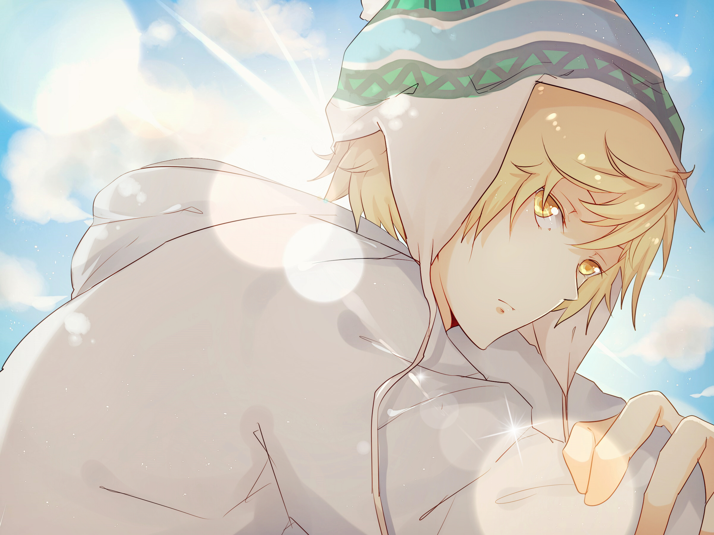
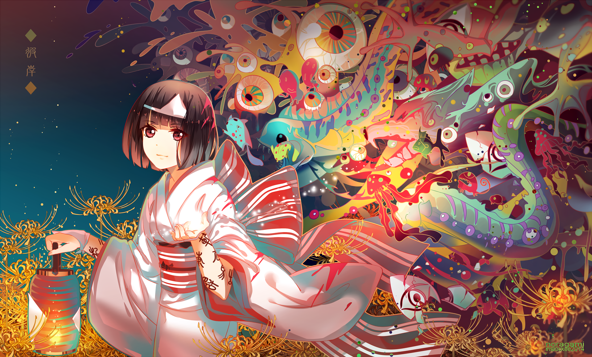

| Nome |
Foto |
Informações |
| Yato |
 |
Yato é um deus inferior, desconhecido e sem santuário, que realiza trabalhos por 5 ienes cada. Sua atitude relativamente infantil e cruel, além do seu mais recente "trabalho" faz com que sua antiga Shinki, Mayu, o abandone. Porém, ele conhece uma menina chamada Iki Hiyori e um espírito o qual chama de Yukine, e desde então, a sua vida muda para sempre. |
| Yukine |
 |
Yukine morreu jovem, fazendo-o perder sua vida normal de estudante. Ele age conforme a sua idade, e costumava roubar dinheiro das pessoas sob o pretexto de que não fazia mal, já que ele está morto. Toda vez que ele roubava ou pecava de algum outro modo, Yato sofria danos. |
| Nora |
 |
Nora foi nomeada por Yato como Hiiro (緋), sendo "Hiki" (緋器) seu nome de Shinki, e ela continua a se oferecer para que ele a use, apesar de ele sempre resistir. Ela causa uma série de problemas, indo longe o bastante para destruir a fé de Yukine em si próprio. |
| Hiyori |
|
Hiyori é uma estudante comum do nono ano e do ensino médio a partir do capítulo 25 do mangá. Após salvar Yato de um atropelamento, ela desenvolve o problema de involuntariamente dormir após sua alma "escapar" do seu corpo e, de algum modo, ficar presa entre o mundo dos humano e o pós-vida. |